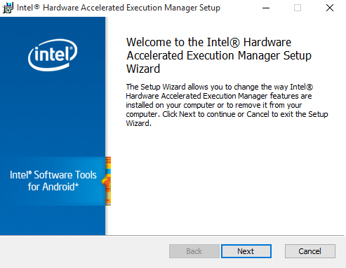

This article details the requirements for developing Android applications with GeneXus and also the requirements of the target devices.
We provide a setup that automatically downloads and installs all Android SDK requirements. Note that you'll also be able to access this setup through the Update Android SDK tool menu option from Genexus IDE.
| Download the Android Requirements Installer |
We discourage installing the Android SDK components manually, but it some cases it may be necessary. So we provide you with the information you'll need to do it.
Note: It is strongly recommended to install the Android SDK (in any directory) with no blank spaces or any special characters
Note: The tool known as "Android SDK Manager" program has been deprecated by Google and is no longer available
You'll have two options, using the command line tool "sdkmanager" provided by the Android SDK or downloading Android Studio and using the "SDK Manager" built-in. In either case, you'll have to install the following components. Each component per upgrade can be found in <genexus_directory>/Android/RequirementsTool/android_requirements.txt.
| GeneXus 17 upgrade 7 or higher users. | ||
|---|---|---|
| Component | Required Version | Comments |
| Android SDK Tools | 26.1.1 or higher | Refer to Update Android SDK tool option. |
| Android SDK Platform-Tools | 31.0.3 or higher | - |
| Android SDK Build-tools | 31.0.0 exactly | - |
| Android Emulator | 30.7.3 | - |
| Android 12(API 31) | Any |
- |
| - SDK Platform | - | |
| - Google APIs Intel x86 Atom System Image | Any | If you have an Intel-based computer, use the Intel x86 System Image. Otherwise, use the ARM EABI v7a System Image. If there are any AVD already created with the previous requirement (Intel x86 Atom System Image), it will not be re-created. You may consider to delete it from the AVD Manager and re-run the app from GeneXus to create a new one. |
| Android Support Repository | 45 or higher | - |
| Google Repository | 44 or higher | - |
| Intel x86 Emulator Accelerator (HAXM installer) | Any | If HAXM cannot be installed, it is necessary to install Android 5.1 (API 21), including SDK Platform and ARM EABI v7a System Image. |
| GeneXus 17 upgrade 2 up to GeneXus 17 Upgrade 6. | ||
|---|---|---|
| Component | Required Version | Comments |
| Android SDK Tools | 26.1.1 or higher | Refer to Update Android SDK tool option. |
| Android SDK Platform-Tools | 30.0.5 or higher | - |
| Android SDK Build-tools | 30.0.2 exactly | - |
| Android Emulator | 30.2.5 | - |
| Android 11.0 (API 30) | Any |
- |
| - SDK Platform | - | |
| - Google APIs Intel x86 Atom System Image | Any | If you have an Intel-based computer, use the Intel x86 System Image. Otherwise, use the ARM EABI v7a System Image. If there are any AVD already created with the previous requirement (Intel x86 Atom System Image), it will not be re-created. You may consider to delete it from the AVD Manager and re-run the app from GeneXus to create a new one. |
| Android Support Repository | 45 or higher | - |
| Google Repository | 44 or higher | - |
| Intel x86 Emulator Accelerator (HAXM installer) | Any | If HAXM cannot be installed, it is necessary to install Android 5.1 (API 21), including SDK Platform and ARM EABI v7a System Image. |
| GeneXus 17 and GeneXus 17 upgrade 1 users. | ||
|---|---|---|
| Component | Required Version | Comments |
| Android SDK Tools | 26.1.1 or higher | Refer to Update Android SDK tool option. |
| Android SDK Platform-Tools | 29.0.5 or higher | - |
| Android SDK Build-tools | 29.0.2 exactly | - |
| Android Emulator | 29.2.1 | - |
| Android 10.0 (API 29) | Any |
- |
| - SDK Platform | - | |
| - Google APIs Intel x86 Atom System Image | Any | If you have an Intel-based computer, use the Intel x86 System Image. Otherwise, use the ARM EABI v7a System Image. If there are any AVD already created with the previous requirement (Intel x86 Atom System Image), it will not be re-created. You may consider to delete it from the AVD Manager and re-run the app from GeneXus to create a new one. |
| Android Support Repository | 45 or higher | - |
| Google Repository | 44 or higher | - |
| Intel x86 Emulator Accelerator (HAXM installer) | Any | If HAXM cannot be installed, it is necessary to install Android 5.1 (API 21), including SDK Platform and ARM EABI v7a System Image. |
This step is only necessary if your computer has an Intel-based CPU.
Once you have finished downloading the requirements, you must install HAXM. Then, open the <Android_SDK_Installation_Directory>/Extras/Intel/Hardware_Acelerated_Execution_Manager directory, execute the intelhaxm-android.exe installer, and follow its instructions.

With this configuration, you can run Android applications on your device (if it is plugged into your computer).
Recommendation: HAXM only works in Intel processors if the Hyper-V feature of Windows platform is turned off and VT-x is enabled in your BIOS.
As stated above, Android SDK requires at least 3GB of free space on your disk.
2 GB of RAM are required by default for compilation approx; this value can be changed in the Android specific properties.
The compilation process uses the Gradle build system which needs network connectivity to download dependencies. If your environment does not have network connectivity the build will cancel with an error similar to the following:
error: FAILURE: Build failed with an exception. error: error: * What went wrong: error: A problem occurred configuring root project 'Android'. error: > Could not resolve all artifacts for configuration ':classpath'. error: > Could not resolve com.android.tools.build:gradle:3.4.1. error: Required by: error: project : error: > Could not resolve com.android.tools.build:gradle:3.4.1. error: > Could not get resource 'https://dl.google.com/dl/android/maven2/com/android/tools/ build/gradle/3.4.1/gradle-3.4.1.pom'. error: > Could not GET 'https://dl.google.com/dl/android/maven2/com/android/tools/build/ gradle/3.4.1/gradle-3.4.1.pom'.
You can add the gradle --offline option to the Gradle Options property to force gradle to work offline and do not download any dependency. You will need to previously download all the dependencies needed and update the GeneXus installation; follow the steps detailed in SAC #47748.